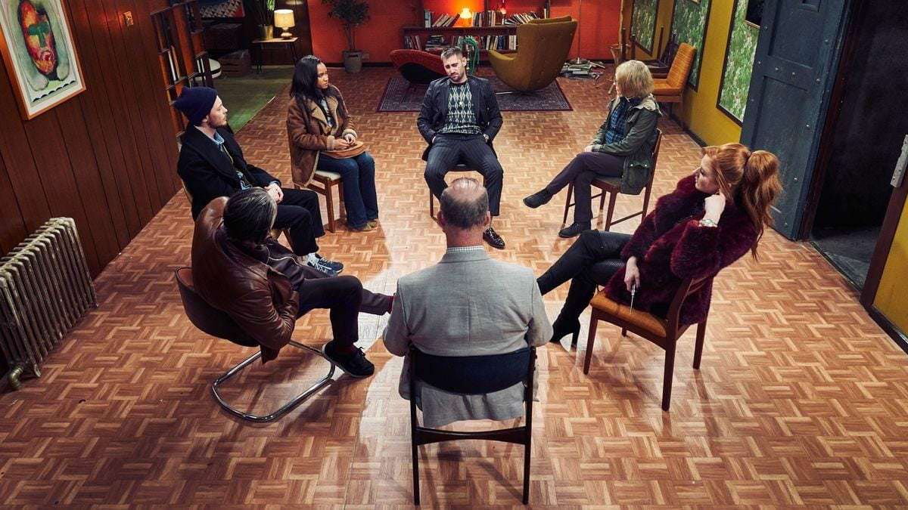

історії учасників
Порно одержимість.
Одержимість порно - початок
Я вірив в Бога з дитинства і став найгарячішим християнином в молодіжній групі, але у мене був секрет, який мені було соромно розповісти кому-небудь. Іноді я ховав каталог Littlewoods в свою спальню і мастурбував в секцію нижньої білизни. Після цього я відчув нищівного сором і молився про прощення і поклявся, що зупинюся, але незабаром я виявив, що роблю це знову, і зненавидів себе за це. Повторення завдало собі шкоду, сором був моїм мечем. Це було початком 25-річної одержимості порно
Знайомство з Інтернетом
Коли я знайшов Інтернет, моя одержимість порно почала прогресувати. Протягом декількох місяців я дивився тільки «зі смаком», бідно одягнених знаменитостей і манекенниць, потім виявляв, що шукаю фотографії топлес, потім оголені, потім відео - але тільки ті, в яких є жінки, а потім жорсткі порно відео. Весь час одержимість переходила в нижчу середу. Начебто моя совість стала жорсткішою, і щоб відчути сором, мені потрібно було перетнути більше кордонів. Я повторив зразок свого підліткового віку: просив у Бога прощення, клявся, що зупинюся, видаляючи всі на моєму комп'ютері. Я читав книги по самодопомоги, довірявся керівникам церкви і молився. Здавалося, нічого не працює, і я не міг залишатися на місці.
Прогрес
Я змирився з тим, що терплю і приймаю одержимість порно в своєму житті. Я намагався кинути палити 25 років і не міг, і при цьому я не хотів прожити своє життя в гонитві за своєю пожадливістю. Так що я намагався керувати цим, тримати це окремо від іншої частини мого життя. На той час я був служителем
молоді в церкві, але звик жити в несумісності моєї віри і моєї одержимості порно. Але ця нав'язлива ідея невблаганно прогресує, і в кінці кінців екрану стало недостатньо, я розіграв реальну людину і розбив серце своїй дружині.
Рішення
Пробираючись через двері мого першого зібрання анонімних сексоголіків, я був травмований тим, з чим мені довелося зіткнутися в собі, і боявся, що ось-ось втрачу все, що я цінував; моя дружина, сім'я, будинок, репутація і робота. Я відповідав за своє життя і збив її з обриву.
Я не міг ясно мислити і втратив упевненість в собі, але коли я оглянув кімнату, я побачив людей з такими історіями, як моя, які зупинилися. Я був готовий спробувати, у мене з'явився спонсор, я пішов його порад, зупинився і залишився зупиненим - то, що я ніколи не міг зробити самотужки.
Я не могу описать облегчение, которое я испытываю, наконец, избавившись от моей одержимости порно, награда за выздоровление выходит далеко за рамки простого прекращения. С годами я могу повзрослеть и стать мужчиной, которым должен был быть, не постоянно подрывая себя стыдом и страхом, что я разоблачусь.
Если вы отождествляете себя с нашими историями, свяжитесь с нами, приходите на встречу на этой неделе и посмотрите, может ли это сработать и для вас..
What we offer
-
Знайти зустріч
ШУКАТИ ЗУСТРІЧЗустрічі анонімних сексоголіків проходять особисто, в групах, по Skype і по телефону.
-

Зв'яжіться з нами
ЗВ'ЯЖІТЬСЯ З НАМИМожливо одужання від сексуальної залежності. Ми прагнемо відповісти авторам протягом 24 годин.
-
Пройдіть наш тест на сексуальну залежність
Цей тест на сексуальну залежність допоможе вам визначити, чи потрібні вам анонімні сексоголіки
Пройти тест